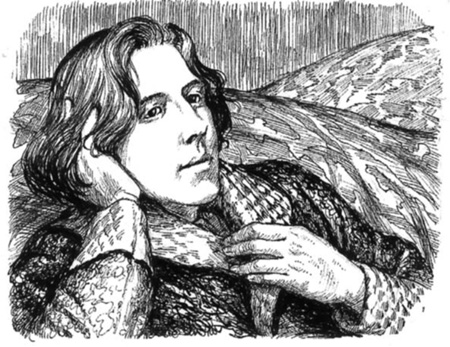

Listen to Part 1:
Oscar Wilde sinh ra ở Dublin, Ireland vào năm 1854. Ông mất tại Paris năm 1900. Nhiều truyện, vở kịch và bài thơ mà Oscar Wilde sáng tác vẫn còn được ưa chuộng cho đến ngày nay.
Truyện: The Picture of Dorian Gray, Lord Arthur Savile’s Crime and Other Stories, The Happy Prince and Other Tales.
Vở kịch: Lady Windermere’s Fan, A Woman of No Importance, An Ideal Husband, The Importance of Being Earnest.
Bài thơ và tiểu luận: The Ballad of Reading Gaol, Ravenna, De Profundis.
